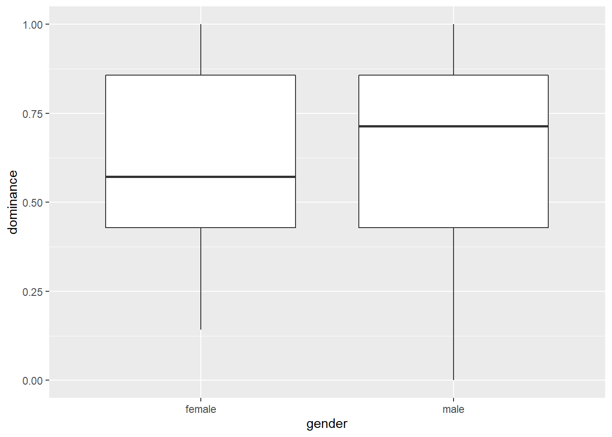
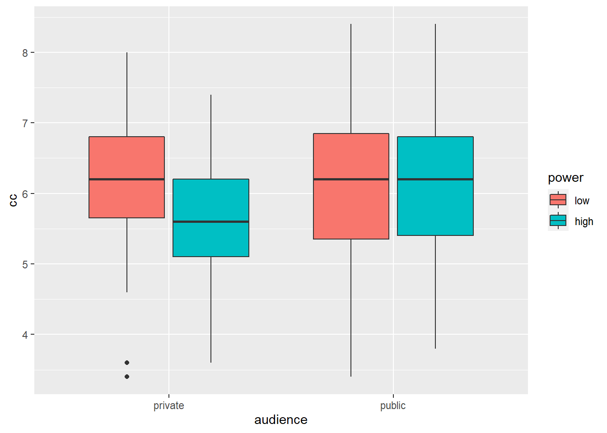
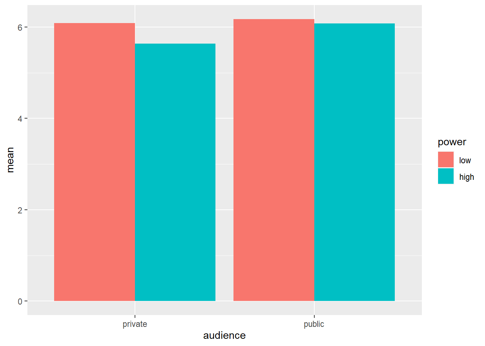
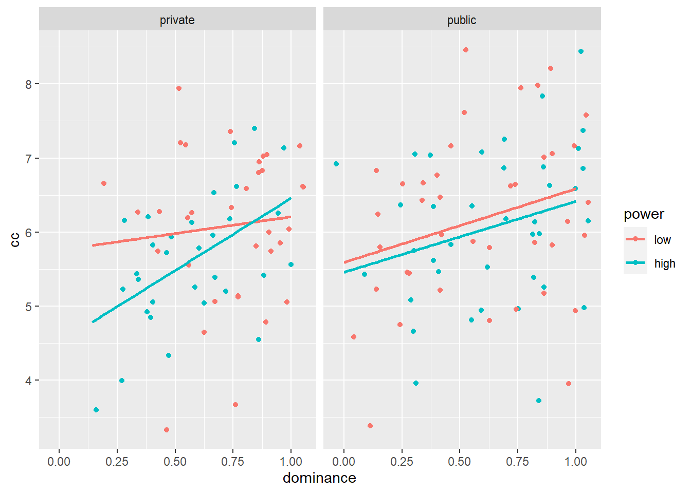
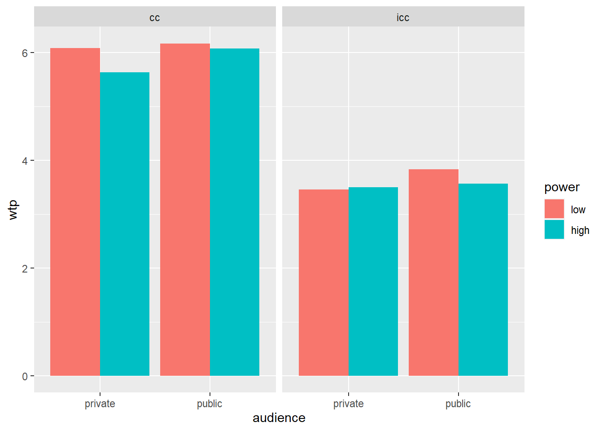

Análise Básica de Dados: Experimentos
Neste capítulo, analisaremos os dados de um experimento que testou se o senso de poder das pessoas afeta sua disposição de pagar (WTP) por produtos relacionados ao status (ou seja, por consumo conspícuo) e se essa relação é diferente quando a WTP desses produtos é visível para os outros versus não.
Os participantes vieram ao nosso laboratório em grupos de oito ou sete. Estavam sentados em frente a um computador em cubículos semi-fechados. Na introdução, os participantes leram que primeiro teriam que preencher um questionário de personalidade e uma pesquisa sobre como eles lidavam com dinheiro. Depois disso, eles teriam que trabalhar juntos em grupos de dois em alguns quebra-cabeças.
A primeira parte da sessão foi um questionário de personalidade avaliando dominância e aspirações de status (Cassidy & Lynn, 1989; Mead & Maner, 2012). Os participantes leram 18 declarações e indicaram se cada uma delas se aplicava a elas ou não. Após o preenchimento deste questionário, os participantes foram lembrados de que, no final da sessão, teriam que trabalhar juntos com outro participante em alguns quebra-cabeças. Cada díade consistiria em um gerente e um trabalhador. Os participantes leram que a atribuição a esses papéis foi baseada em seus resultados no questionário de personalidade, mas, na realidade, a atribuição a papéis foi aleatória.
Os participantes na condição de alta potência então leram que eram mais adequados para serem gerentes, enquanto os participantes na condição de baixa potência liam que eram mais adequados para serem trabalhadores (Galinsky, Gruenfeld e Magee, 2003). As instruções deixaram claro que os gerentes teriam mais poder na tarefa de resolver quebra-cabeças do que os trabalhadores (eles poderiam decidir como um bônus em potencial de 20 euros seria dividido entre gerente e trabalhador). Antes de iniciar os quebra-cabeças, no entanto, os participantes foram convidados a participar de um estudo diferente.
Em um estudo ostensivamente diferente, a disposição dos participantes de gastar em produtos conspícuos e discretos foi medida. Na introdução desta parte do experimento, a presença do público foi manipulada. Na condição privada, os participantes foram informados simplesmente de que estávamos interessados em seus padrões de consumo. Eles foram questionados quanto gastariam em dez produtos que diferiam na medida em que poderiam ser usados para sinalizar o status. Os produtos conspícuos ou aprimoradores de status eram: um carro novo, uma casa, viagens, roupas e um relógio de pulso (para homens) ou jóias (para mulheres). Os produtos discretos ou com status neutro eram produtos de higiene pessoal básicos, medicamentos domésticos, despertador de quarto, utensílios de cozinha e limpeza doméstica (Griskevicius, et al., 2007). Os participantes responderam em uma escala de nove pontos, variando de 1: “Eu compraria itens muito baratos” a 9: “Eu compraria itens muito caros”.
Na condição pública, os participantes foram informados de que estávamos trabalhando em um site onde as pessoas pudessem se encontrar. Este site nos ajudaria a investigar como as pessoas formam impressões entre si com base nos padrões de consumo. Os participantes leram que primeiro teriam que indicar quanto gastariam em alguns produtos. Suas escolhas seriam resumidas em um perfil. Os outros participantes da sessão teriam que formar impressões sobre eles com base nesse perfil. Depois de ver um exemplo da aparência do perfil, os participantes passaram para a mesma medida de consumo da condição privada.
Em suma, o experimento tem um design 2 (poder: alto vs. baixo) x 2 (público: público vs. privado) x 2 (consumo: conspícuo vs. discreto) com poder e audiência manipulados entre os sujeitos e consumo manipulado entre os sujeitos.
As hipóteses neste experimento foram as seguintes:
- Na condição de privado, esperávamos que os participantes de baixa potência tivessem uma WTP maior do que os participantes de alta potência para produtos visíveis, mas não para produtos discretos. Esse padrão de resultados replicaria os resultados de Rucker e Galinsky (2008).
- Esperávamos que a manipulação pública versus privada reduzisse a WTP para produtos visíveis para participantes de baixa potência, mas não para participantes de alta potência.Não esperávamos um efeito da manipulação pública versus privada na WTP para produtos discretos para participantes de baixa ou alta potência.
Este experimento é descrito com mais detalhes em minha tese de doutorado (Franssens, 2016)
Referências
Cassidy, T., & Lynn, R. (1989). A multifactorial approach to achievement motivation: The development of a comprehensive measure. Journal of Occupational Psychology, 62(4), 301-312.
Franssens, S. (2016). Essays in consumer behavior (Doctoral dissertation). KU Leuven, Leuven, Belgium.
Galinsky, A. D., Gruenfeld, D. H., & Magee, J. C. (2003). From Power to action. Journal of Personality and Social Psychology, 85(3), 453-466. https://doi.org/10.1037/0022-3514.85.3.453
Griskevicius, V., Tybur, J. M., Sundie, J. M., Cialdini, R. B., Miller, G. F., & Kenrick, D. T. (2007). Blatant benevolence and conspicuous consumption: When romantic motives elicit strategic costly signals. Journal of Personality and Social Psychology, 93(1), 85-102. https://doi.org/10.1037/0022-3514.93.1.85
Mead, N. L., & Maner, J. K. (2012). On keeping your enemies close: Powerful leaders seek proximity to ingroup power threats. Journal of Personality and Social Psychology, 102(3), 576-591. https://doi.org/10.1037/a0025755
Rucker, D. D., & Galinsky, A. D. (2008). Desire to acquire: Powerlessness and compensatory consumption. Journal of Consumer Research, 35(2), 257-267. https://doi.org/10.1086/588569
Dados
Importação
Faça o download dos dados aqui. Como sempre, salve os dados em um diretório (de preferência um backup automático do software de compartilhamento de arquivos) e inicie seu script carregando o tidyverse e definindo o diretório de trabalho no diretório em que você acabou de salvar seus dados:
#library(tidyverse)
#library(readxl) # precisamos deste pacote pois nossos dados estao num arquivo Excel
#setwd("c:/dropbox/work/teaching/R/") # mudando para o nosso diretorio de trabalho
#powercc <- read_excel("power_conspicuous_consumption.xlsx","data") # Importe o arquivo Excel. Perceba que o nome da aba do Excel eh datalibrary(readxl)
url<-"http://users.telenet.be/samuelfranssens/tutorial_data/power_conspicuous_consumption.xlsx"
powercc <- tempfile()
download.file(url, powercc, mode="wb")
powercc<-read_excel(path = powercc, sheet = 1)
powercc## # A tibble: 147 x 39
## subject start_date end_date duration finished power audience
## <dbl> <dttm> <dttm> <dbl> <dbl> <chr> <chr>
## 1 1 2012-04-19 09:32:56 2012-04-19 09:49:42 1006. 1 high public
## 2 2 2012-04-19 09:31:26 2012-04-19 09:51:13 1187. 1 low public
## 3 3 2012-04-19 09:29:50 2012-04-19 09:53:10 1400. 1 low public
## 4 4 2012-04-19 09:26:25 2012-04-19 09:53:21 1616. 1 low public
## 5 5 2012-04-19 09:20:55 2012-04-19 09:54:21 2006. 1 high public
## 6 6 2012-04-19 09:28:02 2012-04-19 09:55:50 1668. 1 high public
## 7 7 2012-04-19 09:17:54 2012-04-19 09:58:49 2455. 1 low public
## 8 8 2012-04-19 09:22:26 2012-04-19 10:01:40 2354. 1 high public
## 9 9 2012-04-19 10:13:12 2012-04-19 10:31:03 1071. 1 low public
## 10 10 2012-04-19 10:12:55 2012-04-19 10:31:29 1114. 1 high public
## # ... with 137 more rows, and 32 more variables: group_size <dbl>, gender <chr>,
## # age <dbl>, dominance1 <dbl>, dominance2 <dbl>, dominance3 <dbl>, dominance4 <dbl>,
## # dominance5 <dbl>, dominance6 <dbl>, dominance7 <dbl>, sa1 <dbl>, sa2 <dbl>, sa3 <dbl>,
## # sa4 <dbl>, sa5 <dbl>, sa6 <dbl>, sa7 <dbl>, sa8 <dbl>, sa9 <dbl>, sa10 <dbl>,
## # sa11 <dbl>, inconspicuous1 <dbl>, inconspicuous2 <dbl>, inconspicuous3 <dbl>,
## # inconspicuous4 <dbl>, inconspicuous5 <dbl>, conspicuous1 <dbl>, conspicuous2 <dbl>,
## # conspicuous3 <dbl>, conspicuous4 <dbl>, conspicuous5 <dbl>, agree <dbl>Não se esqueça de salvar seu script no diretório de trabalho.
Manipulação
Temos 39 colunas ou variáveis em nossos dados:
- subject identifica os participantes
- start_date e end_date indicam o início e o fim da sessão experimental.
- duration indica a duração da sessão experimental
- finished: os participantes concluíram todo o experimento?
- power (alto vs. baixo) e público (privado vs. público) são as condições experimentais
- group_size: em grupos de quantos participantes compareceram ao laboratório?
- gender e age do participante
- dominance1, dominance2, etc. são as perguntas que mediram a dominância. Um exemplo é “Eu acho que gostaria de ter autoridade sobre outras pessoas”. Os participantes responderam com sim (1) ou não (0).
- sa1, sa2 etc. são as perguntas que medem as aspirações de status. Um exemplo é: “Gostaria de um trabalho importante, onde as pessoas me admirassem”. Os participantes responderam com sim (1) ou não (0).
- inconspicuous1, inconspicuous2, etc. contêm a WTP para os produtos inconspicuous. Escala de 1: eu compraria itens muito baratos a 9: eu compraria itens muito caros.
- conspicuous1, conspicuous2, etc. contêm a WTP para os produtos conspícuos. Escala de 1: eu compraria itens muito baratos a 9: eu compraria itens muito caros.
- agree: uma questão exploratória que mede se as pessoas concordam que elas são mais adequadas ao papel de trabalhador ou gerente. Os participantes responderam em uma escala de 1: muito mais adequado para a função de trabalhador (gerente) a 7: muito mais adequado para a função de gerente (trabalhador). Números mais altos indicam concordância com a atribuição de função no experimento.
Fatorar algumas variáveis
Após a inspeção dos dados, vemos que o tipo de subject é duplo, o que significa que o subject deve ser fatorado para que seus valores não sejam tratados como números. Também fatoraremos nossas condições experimentais:
library(dplyr)
powercc <- powercc %>% # nos criamos o objeto powercc anteriormente
mutate(subject = factor(subject),
power = factor(power, levels = c("low","high")), # note os niveis dos argumentos
audience = factor(audience, levels = c("private","public"))) # note os niveis dos argumentosObserve que fornecemos novos levels de argumento ao fatorar poder e público. Este argumento especifica a ordem dos levels de um fator. No contexto desse experimento, é mais natural falar sobre o efeito da alta versus baixa potência no consumo do que falar sobre o efeito da baixa versus alta potência no consumo. Portanto, dizemos ao R que o baixo nível de energia deve ser considerado como o primeiro nível. Mais adiante, veremos que o resultado das análises pode ser interpretado como efeitos de alta potência (segundo nível) vs. baixa potência (primeiro nível). O mesmo raciocínio se aplica ao fator público, embora não seja necessário fornecer os níveis para esse fator porque o privado vem antes do público em ordem alfabética. Sua escolha do nível para o primeiro ou nível de referência influencia apenas a interpretação, não o resultado real da análise.
Em uma sessão experimental, o alarme de incêndio disparou e tivemos que sair do laboratório. Vamos remover os participantes que não concluíram a experiência:
powercc <- powercc %>% # nos ja criamos o objeto powercc anteriormente
filter(finished == 1) # somente mantenha as observacoes que sao terminadas ou iguais a 1Observe o dobro \(==\) ao testar a igualdade. Confira o livro R4 Data Science para outros operadores lógicos (role para baixo para chegar à Seção 5.2.2).
Calcular a consistência interna e a média de perguntas que medem o mesmo conceito
Gostaríamos de calcular a média das perguntas que medem a dominância para obter um único número indicando se o participante tem uma personalidade dominante ou não dominante. Antes de fazer isso, devemos ter uma idéia da consistência interna das perguntas que medem o domínio. Isso nos dirá se todas essas perguntas medem o mesmo conceito. Uma medida da consistência interna é o alfa de Cronbach. Para calcular, precisamos de um pacote chamado psych:
##
## Attaching package: 'psych'## The following object is masked from 'package:car':
##
## logit## The following object is masked from 'package:Hmisc':
##
## describe## The following objects are masked from 'package:ggplot2':
##
## %+%, alphaDepois que o pacote for carregado, podemos usar a função alfa para calcular o alfa de Cronbach para um conjunto de perguntas:
dominance.questions <- powercc %>%
select(starts_with("dominance")) # pegue o dataframe powercc e selecione todas as viariaveis com o nome que se inicia com dominancia
alpha(dominance.questions) # calcula o alfa de cronbach para essas variaveis##
## Reliability analysis
## Call: alpha(x = dominance.questions)
##
## raw_alpha std.alpha G6(smc) average_r S/N ase mean sd median_r
## 0.69 0.67 0.67 0.23 2.1 0.038 0.63 0.27 0.21
##
## lower alpha upper 95% confidence boundaries
## 0.61 0.69 0.76
##
## Reliability if an item is dropped:
## raw_alpha std.alpha G6(smc) average_r S/N alpha se var.r med.r
## dominance1 0.68 0.67 0.66 0.25 2.0 0.039 0.016 0.22
## dominance2 0.65 0.63 0.62 0.22 1.7 0.043 0.018 0.21
## dominance3 0.59 0.58 0.56 0.19 1.4 0.050 0.014 0.20
## dominance4 0.62 0.60 0.59 0.20 1.5 0.047 0.018 0.21
## dominance5 0.65 0.64 0.63 0.23 1.7 0.043 0.021 0.21
## dominance6 0.70 0.70 0.68 0.28 2.4 0.038 0.009 0.25
## dominance7 0.65 0.64 0.62 0.23 1.8 0.043 0.017 0.20
##
## Item statistics
## n raw.r std.r r.cor r.drop mean sd
## dominance1 143 0.52 0.49 0.33 0.29 0.53 0.50
## dominance2 143 0.59 0.61 0.52 0.42 0.80 0.40
## dominance3 143 0.75 0.74 0.71 0.59 0.52 0.50
## dominance4 143 0.68 0.68 0.61 0.50 0.58 0.50
## dominance5 143 0.61 0.59 0.48 0.40 0.55 0.50
## dominance6 143 0.29 0.38 0.19 0.14 0.91 0.29
## dominance7 143 0.62 0.59 0.48 0.41 0.53 0.50
##
## Non missing response frequency for each item
## 0 1 miss
## dominance1 0.47 0.53 0
## dominance2 0.20 0.80 0
## dominance3 0.48 0.52 0
## dominance4 0.42 0.58 0
## dominance5 0.45 0.55 0
## dominance6 0.09 0.91 0
## dominance7 0.47 0.53 0# Observe que também poderíamos ter escrito isso da seguinte maneira:
# powercc %>% select(starts_with("dominance")) %>% cronbach()Isso produz muita saída. Em raw_alpha, vemos que o alfa é 0,69, que fica no lado inferior (0,70 é geralmente considerado o mínimo necessário), mas ainda está ok. A tabela abaixo nos diz qual seria o alfa se retirássemos uma pergunta de nossa medida. A queda da dominance6 aumentaria o alfa para 0,7. Comparado ao alfa original de 0,69, esse aumento é pequeno e, portanto, não perdemos a dominance6. Se houvesse uma pergunta com um alto “alfa se descartado”, isso indicaria que esta pergunta está medindo algo diferente das outras perguntas. Nesse caso, você pode considerar remover esta pergunta da sua medida.
Podemos proceder calculando a média das respostas sobre a questão do domínio:
powercc <- powercc %>%
mutate(dominance = (dominance1+dominance2+dominance3+dominance4+dominance5+dominance6+dominance7)/7,
cc = (conspicuous1+conspicuous2+conspicuous3+conspicuous4+conspicuous5)/5,
icc = (inconspicuous1+inconspicuous2+inconspicuous3+inconspicuous4+inconspicuous5)/5) %>%
select(-starts_with("sa"))Também calculei a média das perguntas sobre consumo conspícuo e consumo discreto, mas não sobre as aspirações de status porque o alfa de Cronbach era muito baixo. Excluí as perguntas sobre aspirações de status do conjunto de dados. Deixo como um exercício verificar os alfa de Cronbach de cada um desses conceitos (faça isso antes de excluir as perguntas sobre as aspirações de status, é claro).
Recapitulando: importando e manipulando
Aqui está o que fizemos até agora, em uma sequência ordenada de operações canalizadas (faça o download dos dados aqui}):
#library(tidyverse)
#library(readxl)
#setwd("c:/dropbox/work/teaching/R/") # mudando para seu proprio diretorio
#powercc <- read_excel("power_conspicuous_consumption.xlsx","data") %>%
# filter(finished == 1) %>%
#mutate(subject = factor(subject),
# power = factor(power, levels = c("low","high")),
# audience = factor(audience, levels = c("private","public")),
# dominance = (dominance1+dominance2+dominance3+dominance4+dominance5+dominance6+dominance7)/7,
# cc = (conspicuous1+conspicuous2+conspicuous3+conspicuous4+conspicuous5)/5,
# icc = (inconspicuous1+inconspicuous2+inconspicuous3+inconspicuous4+inconspicuous5)/5) %>%
# select(-starts_with("sa"))Teste \(t\)
Teste \(t\) para amostras independentes
Digamos que queremos testar se homens e mulheres diferem no grau em que são dominantes. Vamos criar um boxplot primeiro e depois verificar as médias e os desvios padrão:

powercc %>%
group_by(gender) %>%
summarise(mean_dominance = mean(dominance),
sd_dominance = sd(dominance))## `summarise()` ungrouping output (override with `.groups` argument)## # A tibble: 2 x 3
## gender mean_dominance sd_dominance
## <chr> <dbl> <dbl>
## 1 female 0.614 0.247
## 2 male 0.646 0.296Os homens pontuam um pouco mais alto que as mulheres, mas queremos saber se essa diferença é significativa. Um teste \(t\) de amostras independentes pode fornecer a resposta (os homens e as mulheres em nosso experimento são amostras independentes), mas precisamos verificar primeiro uma suposição: as variações das duas amostras independentes são iguais?
#install.packages("car") # para o teste de variancias iguais, precisamos de um pacote chamado car
library(car)
# Teste Levene para igualdade de variancias.
# Baixo valor-p indica que as variancias nao sejam iguais.
# Primeiro argumento = variavel dependente continua, segundo argumento = variavel independente categorica
leveneTest(powercc$dominance, powercc$gender) ## Warning in leveneTest.default(powercc$dominance, powercc$gender): powercc$gender coerced to
## factor.## Levene's Test for Homogeneity of Variance (center = median)
## Df F value Pr(>F)
## group 1 2.1915 0.141
## 141A hipótese nula de variâncias iguais não é rejeitada (\(p = 0,14\)), para que possamos continuar com um teste \(t\) que assume variâncias iguais:
# Teste se os meios de dominancia diferem entre os sexos.
# Indique se o teste deve assumir variacoes iguais ou nao (define var.equal = FALSE para um teste que nao assume variacoes iguais).
t.test(powercc$dominance ~ powercc$gender, var.equal = TRUE) ##
## Two Sample t-test
##
## data: powercc$dominance by powercc$gender
## t = -0.6899, df = 141, p-value = 0.4914
## alternative hypothesis: true difference in means is not equal to 0
## 95 percent confidence interval:
## -0.12179092 0.05877722
## sample estimates:
## mean in group female mean in group male
## 0.6142857 0.6457926Você pode relatar o seguinte: “Homens (\(M = 0,65, DP = 0,3\)) e mulheres (\(M = 0,61, DP = 0,25\)) não diferiram no grau em que se classificaram como dominantes (\(t (141) = -0,69 , p = 0,49\)).”
Teste \(t\) para amostras dependentes
Digamos que queremos testar se as pessoas estão mais dispostas a gastar em itens conspícuos do que em itens discretos. Vamos verificar os meios e os desvios padrão primeiro:
powercc %>% # nao ha necessidade de agrupar! nao estamos dividindo nossa amostra em subgrupos
summarise(mean_cc = mean(cc), sd_cc = sd(cc),
mean_icc = mean(icc), sd_icc = sd(icc))## # A tibble: 1 x 4
## mean_cc sd_cc mean_icc sd_icc
## <dbl> <dbl> <dbl> <dbl>
## 1 6.01 1.05 3.60 0.988As médias são mais altas para produtos conspícuos do que para produtos discretos, mas queremos saber se essa diferença é significativa e, portanto, realizar um teste t de amostras dependentes (cada participante classifica produtos conspícuos e discretos, portanto, essas classificações são dependentes):
t.test(powercc$cc, powercc$icc, paired = TRUE) # Teste se as medias de cc e icc sao diferentes. Indique que este eh um teste t de amostras dependentes com emparelhado = TRUE.##
## Paired t-test
##
## data: powercc$cc and powercc$icc
## t = 25.064, df = 142, p-value < 2.2e-16
## alternative hypothesis: true difference in means is not equal to 0
## 95 percent confidence interval:
## 2.214575 2.593816
## sample estimates:
## mean of the differences
## 2.404196Você pode relatar o seguinte: “As pessoas indicaram que estavam dispostas a pagar mais (\(t (142) = 25.064\), \(p <0,001\)) por produtos conspícuos (\(M = 6,01, DP = 1,05\)) do que por produtos discretos (\(M = 3,6, DP = 0,99\)).”
Teste \(t\) para amostra única
Digamos que queremos testar se a disposição média de pagar pelos itens visíveis foi significativamente maior que 5 (o ponto médio da escala):
t.test(powercc$cc, mu = 5) # Indique a variavel cuja media queremos comparar com um valor especifico (5).##
## One Sample t-test
##
## data: powercc$cc
## t = 11.499, df = 142, p-value < 2.2e-16
## alternative hypothesis: true mean is not equal to 5
## 95 percent confidence interval:
## 5.833886 6.180100
## sample estimates:
## mean of x
## 6.006993Na verdade, é significativamente maior que 5. Você pode relatar o seguinte: “A WTP média para produtos conspícuos (M = 6,01, DP = 1,05) estava significativamente acima de 5 (t (142) = 11,499, \(p <0,001\)).”
ANOVA Bivariada
Quando você lê um artigo acadêmico que relata um experimento, a seção de resultados geralmente começa com uma discussão dos principais efeitos dos fatores experimentais e sua interação, conforme testado por uma Análise de variância ou ANOVA. Vamos nos concentrar primeiro na WTP para produtos que melhoram o status. (Consideramos brevemente a WTP para produtos com status neutro em nossa discussão sobre testes t de amostras dependentes e discutiremos mais detalhadamente na seção ANOVA de medidas repetidas.)
Vamos inspecionar algumas estatísticas descritivas primeiro. Gostaríamos de ver a WTP média para produtos visíveis, o desvio padrão dessa WTP e o número de participantes em cada célula experimental. Já aprendemos como fazer isso no capítulo introdutório (consulte as tabelas de frequência e as estatísticas descritivas):
powercc.summary <- powercc %>% # estamos atribuindo o resumo a um objeto, porque precisaremos desse resumo para fazer um grafico de barras
group_by(audience, power) %>% # agora agrupamos por duas variaveis
summarise(count = n(),
mean = mean(cc),
sd = sd(cc))## `summarise()` regrouping output by 'audience' (override with `.groups` argument)## # A tibble: 4 x 5
## # Groups: audience [2]
## audience power count mean sd
## <fct> <fct> <int> <dbl> <dbl>
## 1 private low 34 6.08 1.04
## 2 private high 31 5.63 0.893
## 3 public low 40 6.17 1.15
## 4 public high 38 6.07 1.03Vemos que a diferença na WTP entre os participantes de alta e baixa potência é maior na condição privada do que na pública.
Vamos resumir esses resultados em um gráfico de caixa:
# ao criar um grafico de caixa, o conjunto de dados que serve como entrada para o ggplot eh o conjunto de dados completo, nao o resumo com os meios
ggplot(data = powercc, mapping = aes(x = audience, y = cc, fill = power)) +
geom_boxplot() # argumentos sao os mesmos que para geom_bar, mas agora fornecemos a geom_boxplot
Os gráficos boxplot são informativos porque nos dão uma idéia da mediana e da distribuição dos dados. No entanto, em trabalhos acadêmicos, os resultados das experiências são tradicionalmente resumidos em gráficos de barras (mesmo que os gráficos boxplots sejam mais informativos).
# ao criar um grafico de barras, o conjunto de dados que serve como entrada para o ggplot eh o resumo com os meios, nao o conjunto de dados completo
ggplot(data = powercc.summary, mapping = aes(x = audience, y = mean, fill = power)) +
geom_bar(stat = "identity", position = "dodge")
Para criar um gráfico de barras, informamos ao ggplot as variáveis que devem estar no eixo X e no eixo Y e também usamos cores diferentes para diferentes níveis de potência com o comando fill. Então pedimos um gráfico de barras com geom_bar. stat = “identity” e position = “dodge” devem ser incluídos como argumentos para geom_bar, mas uma discussão sobre esses argumentos está além do escopo deste tutorial.
Antes de prosseguirmos com a ANOVA, devemos verificar se suas premissas são atendidas. Discutimos as suposições da ANOVA anteriormente, mas ignoramos aqui.
Para realizar uma ANOVA, precisamos instalar alguns pacotes:
#install.packages(remotes) # O pacote de controles remotos nos permite instalar pacotes armazenados no GitHub, um site para desenvolvedores de pacotes.
#install.packages("car") # Tambem precisaremos do pacote do carro para executar a ANOVA (não é necessário reinstala-lo se você já tiver feito isso).
library(remotes)
install_github('samuelfranssens/type3anova') # Instale o pacote type3anova. Esta e as etapas anteriores precisam ser executadas apenas uma vez.## Skipping install of 'type3anova' from a github remote, the SHA1 (0c38377d) has not changed since last install.
## Use `force = TRUE` to force installationAgora podemos prosseguir com a ANOVA real:
# Cria um modelo linear primeiramente
# A funcao lm() toma os dados e os argumentos
# A formula tem a seguinte sintaxe: variavel dependente ~ variavel independente
linearmodel <- lm(cc ~ power*audience, data=powercc)
# power*audience: interacao eh calculada
# power+audience: interacao nao eh incluida
type3anova(linearmodel) # Em seguida, peça a saída no formato ANOVA. Isso fornece a soma dos quadrados do Tipo III. Observe que isso é diferente da anova (modelo linear), que fornece a soma dos quadrados do tipo I.## # A tibble: 5 x 6
## term ss df1 df2 f pvalue
## <chr> <dbl> <dbl> <int> <dbl> <dbl>
## 1 (Intercept) 5080. 1 139 4710. 0
## 2 power 2.64 1 139 2.45 0.12
## 3 audience 2.48 1 139 2.30 0.132
## 4 power:audience 1.11 1 139 1.03 0.313
## 5 Residuals 150. 139 139 NA NAVocê pode relatar esses resultados da seguinte forma: “Nem o principal efeito do poder (F (1, 139) = 2,45, p = 0,12), nem o principal efeito do público (F (1, 139) = 2,3, p = 0,13), nem a interação entre poder e público (F (1, 139) = 1,03, p = 0,31) foi significativa.”
Seguindo com contrastes
Ao realizar um experimento 2 x 2, geralmente fazemos a hipótese de uma interação. Uma interação significa que o efeito de uma variável independente é diferente dependendo dos níveis da outra variável independente. Na seção anterior, a ANOVA nos disse que a interação entre poder e público não era significativa. Isso significa que o efeito de alta versus baixa potência foi o mesmo na condição privada e pública e que o efeito de público versus privado foi o mesmo na condição de alta e baixa potência. Normalmente, a análise para com a não significância da interação. No entanto, faremos os testes de acompanhamento que um faria se a interação fosse significativa.
Vamos considerar o significado da célula novamente:
powercc.summary <- powercc %>%
group_by(audience, power) %>%
summarise(count = n(),
mean = mean(cc),
sd = sd(cc))## `summarise()` regrouping output by 'audience' (override with `.groups` argument)# ao criar um grafico de barras, o conjunto de dados que serve como entrada para o ggplot eh o resumo com os meios, nao o conjunto de dados completo
ggplot(data = powercc.summary,mapping = aes(x = audience, y = mean, fill = power)) +
geom_bar(stat = "identity", position = "dodge")
## # A tibble: 4 x 5
## # Groups: audience [2]
## audience power count mean sd
## <fct> <fct> <int> <dbl> <dbl>
## 1 private low 34 6.08 1.04
## 2 private high 31 5.63 0.893
## 3 public low 40 6.17 1.15
## 4 public high 38 6.07 1.03Queremos testar se a diferença entre alta e baixa potência na condição privada é significativa (baixa: 6,08 vs. alta: 5,63) e se a diferença entre alta e baixa potência na condição pública é significativa (baixa: 6,17 vs. alta : 6,07). Para fazer isso, podemos usar a função de contraste da biblioteca type3anova que instalamos anteriormente. A função de contraste usa dois argumentos: um modelo linear e uma especificação de contraste. O modelo linear é o mesmo de antes:
Mas, para saber como devemos especificar nosso contraste, precisamos dar uma olhada nos coeficientes de regressão em nosso modelo linear:
##
## Call:
## lm(formula = cc ~ power * audience, data = powercc)
##
## Residuals:
## Min 1Q Median 3Q Max
## -2.7700 -0.6737 0.1177 0.7177 2.3263
##
## Coefficients:
## Estimate Std. Error t value Pr(>|t|)
## (Intercept) 6.08235 0.17812 34.148 <2e-16 ***
## powerhigh -0.45009 0.25792 -1.745 0.0832 .
## audiencepublic 0.08765 0.24226 0.362 0.7181
## powerhigh:audiencepublic 0.35378 0.34910 1.013 0.3126
## ---
## Signif. codes: 0 '***' 0.001 '**' 0.01 '*' 0.05 '.' 0.1 ' ' 1
##
## Residual standard error: 1.039 on 139 degrees of freedom
## Multiple R-squared: 0.03711, Adjusted R-squared: 0.01633
## F-statistic: 1.786 on 3 and 139 DF, p-value: 0.1527Temos 4 coeficientes de regressão:
- \(\beta_{0}\) ou intercepto
- \(\beta_{1}\) ou o coeficiente de powerhigh ou o alto nível do fator de potência (-0,45)
- \(\beta_{2}\) ou o coeficiente para audiencepublic ou o nível público do fator público (0,09)
- \(\beta_{3}\) ou coeficiente para: powerhigh:audiencepublic (0.35)
Vemos que a estimativa para a interceptação corresponde à média observada na célula privada de baixa potência. Adicione a isso a estimativa de powerhigh e obteremos a média observada na célula privada de alta potência. Adicione à estimativa para a interceptação, a estimativa de audiencepublic e obtenha a média observada na célula pública de baixa potência. Adicione à estimativa para a interceptação, a estimativa de powerhigh, audiencepublic e powerhigh:audiencepublic e obteremos a média observada na célula pública de alto poder. Geralmente visualizo isso em uma tabela (e salvo no meu script) para facilitar a especificação do contraste que quero testar:
Digamos que estamos contrastando energia alta versus baixa na condição privada e testamos se (\(\beta_{0}+\beta_{1}\) e \(\beta_{0}\) diferem significativamente ou se (\(\beta_{0}+\beta_{1})-\beta_{0}=\beta_{1}\) é significativamente diferente de zero. Nós especificamos isso da seguinte maneira:
contrast_specification <- c(0, 1, 0, 0)
# os quatro numeros correspondentes a b0, b1, b2, b3.
# queremos testar se b1 eh significativo, entao colocamos 1 em 2º lugar (o 1º lugar é para b0)
#contrast(linearmodel, contrast_specification)
##
## Simultaneous Tests for General Linear Hypotheses
##
## Fit: aov(formula = linearmodel)
##
## Linear Hypotheses:
## Estimate Std. Error t value Pr(>|t|)
## 1 == 0 -0.4501 0.2579 -1.745 0.0832 .
## ---
## Signif. codes: 0 '***' 0.001 '**' 0.01 '*' 0.05 '.' 0.1 ' ' 1
## (Adjusted p values reported -- single-step method)A saída nos diz que a estimativa do contraste é -0,45, que é realmente a diferença entre as médias observadas na condição privada (alta potência: 5,63 vs. baixa potência: 6,08). Você pode relatar esse resultado da seguinte forma: “O efeito de alta (M = 5,63, DP = 0,89) vs. baixa potência (M = 6,08, DP = 1,04) na condição privada foi marginalmente significativo (t (139) = -1,745 , p = 0,083).” Para obter os graus de liberdade, faça um contraste (linearmodel, contrast_specification)$df}
Digamos que queremos testar um contraste mais complicado, ou seja, se a média na célula privada de alta potência é diferente da média das médias nas outras células. Estamos testando:
\((\beta_0 + \beta_1)-1/3*[(\beta_0)+(\beta_0 +\beta_2)+(\beta_0+\beta_1+\beta_2+\beta_3)]\)
\(=\beta_1-1/3*(\beta_1+2\beta_2+\beta_3)\)
\(=2/3 * \beta_1-2/3 * \beta_2-1/3 * \beta_3\)
A especificação de contraste é a seguinte:
contrast_specification <- c(0, 2/3, -2/3, -1/3)
#contrast(linearmodel, contrast_specification)
##
## Simultaneous Tests for General Linear Hypotheses
##
## Fit: aov(formula = linearmodel)
##
## Linear Hypotheses:
## Estimate Std. Error t value Pr(>|t|)
## 1 == 0 -0.4764 0.2109 -2.259 0.0254 *
## ---
## Signif. codes: 0 '***' 0.001 '**' 0.01 '*' 0.05 '.' 0.1 ' ' 1
## (Adjusted p values reported -- single-step method)Verifique se a estimativa realmente corresponde à diferença entre a média de alta potência, privada e a média das médias nas outras células. Você pode relatar o seguinte: “A célula privada de alta potência tinha uma WTP significativamente menor do que as outras células experimentais em nosso projeto (est = -0,476, t (139) = -2,259, p = 0,025)”.
Análise de moderação: interação entre variáveis independentes contínuas e categóricas
Digamos que queremos testar se os resultados do experimento dependem do nível de domínio das pessoas. Em outras palavras, os efeitos do poder e da audiência são diferentes para participantes dominantes versus participantes não dominantes? Ainda em outras palavras, existe uma interação de três vias entre poder, audiência e domínio?
Vamos criar um gráfico primeiro:
# Nossa variavel dependente eh o consumo conspicuo, nossa variavel independente (no eixo X) eh a dominancia.
# Entao, estamos tracando a relacao entre dominancia e consumo conspicuo.
# O argumento da cor diz a R que queremos um relacionamento para cada nivel de poder.
ggplot(data = powercc, mapping = aes(x = dominance, y = cc, color = power)) +
facet_wrap(~ audience) + # Diga a R que tambem queremos dividir por audiencia.
geom_jitter() + # Use geom_jitter em vez de geom_point, caso contrario, os pontos serao desenhados um sobre o outro
geom_smooth(method='lm', se=FALSE) # Desenhe uma linha de regressao linear atraves dos pontos.## `geom_smooth()` using formula 'y ~ x'
Este gráfico é informativo. Isso nos mostra que, na condição privada, o efeito da alta versus baixa potência no consumo conspícuo é mais negativo para participantes menos dominantes do que para participantes mais dominantes. Na condição pública, o efeito da alta versus baixa potência no consumo conspícuo não difere entre os participantes menos versus os mais dominantes. Também vemos que, tanto na condição privada quanto na pública, os participantes mais vs. menos dominantes estão mais dispostos a gastar em consumo conspícuo.
Vamos verificar se a interação de três vias é significativa:
## # A tibble: 9 x 6
## term ss df1 df2 f pvalue
## <chr> <dbl> <dbl> <int> <dbl> <dbl>
## 1 (Intercept) 525. 1 135 519. 0
## 2 power 2.21 1 135 2.18 0.142
## 3 audience 0.715 1 135 0.706 0.402
## 4 dominance 10.5 1 135 10.3 0.002
## 5 power:audience 1.44 1 135 1.42 0.235
## 6 power:dominance 1.18 1 135 1.17 0.282
## 7 audience:dominance 0.113 1 135 0.111 0.739
## 8 power:audience:dominance 1.30 1 135 1.29 0.258
## 9 Residuals 137. 135 135 NA NASomente o efeito da dominância é significativa. Se a interação de três vias fosse significativa, poderíamos acompanhar com mais testes. Por exemplo, poderíamos testar se a interação bidirecional entre dominância e poder é significativa na condição privada, como sugere o gráfico. Para fazer isso, vamos primeiro examinar os coeficientes de regressão do nosso modelo linear:
##
## Call:
## lm(formula = cc ~ power * audience * dominance, data = powercc)
##
## Residuals:
## Min 1Q Median 3Q Max
## -2.58617 -0.63357 0.09751 0.68310 2.24067
##
## Coefficients:
## Estimate Std. Error t value Pr(>|t|)
## (Intercept) 5.7553 0.6019 9.561 <2e-16 ***
## powerhigh -1.2490 0.7703 -1.621 0.107
## audiencepublic -0.1651 0.6918 -0.239 0.812
## dominance 0.4526 0.7980 0.567 0.572
## powerhigh:audiencepublic 1.1162 0.9355 1.193 0.235
## powerhigh:dominance 1.5021 1.1111 1.352 0.179
## audiencepublic:dominance 0.5434 0.9514 0.571 0.569
## powerhigh:audiencepublic:dominance -1.5394 1.3561 -1.135 0.258
## ---
## Signif. codes: 0 '***' 0.001 '**' 0.01 '*' 0.05 '.' 0.1 ' ' 1
##
## Residual standard error: 1.006 on 135 degrees of freedom
## Multiple R-squared: 0.1225, Adjusted R-squared: 0.07703
## F-statistic: 2.693 on 7 and 135 DF, p-value: 0.01211Temos oito termos em nosso modelo:
- \(\beta_0\) ou intercepto;
- \(\beta_1\) ou o coeficiente para -“powerhigh”-
- \(\beta_2\) ou o coeficiente para -“audiencepublic”-
- \(\beta_3\) ou o coeficiente para -“dominance”-
- \(\beta_4\) ou o coeficiente para -“powerhigh:audiencepublic”-
- \(\beta_5\) ou o coeficiente para -“powerhigh:dominance”-
- \(\beta_6\) ou o coeficiente para -“audiencepublic:dominance”-
- \(\beta_7\) ou o coeficiente para -“powerhigh:audiencepublic:dominance”-
Resultando nessa tabela de coeficientes:
# private public
# low power [b0] + (b3) [b0+b2] + (b3+b6)
# high power [b0+b1] + (b3+b5) [b0+b1+b2+b4] + (b3+b5+b6+b7)Como conseguimos essa tabela? Com o modelo linear especificado acima, cada valor estimado de consumo conspícuo (a variável dependente) é uma função da condição experimental do participante e do nível de dominância do participante. Digamos que tenhamos um participante na condição pública de baixa potência com um nível de dominância de 0,5. O valor estimado do consumo conspícuo para esse participante é:
- \(\beta_0\) ou intercepto x 1;
- \(\beta_1\) (porque o participante não está na condição de alta potência)
- \(\beta_2\) × 1 (na condição pública)
- \(\beta_3\) × 0.5 (dominance = 0.5)
- \(\beta_4\) × 0 (não no poder superior e na condição pública)
- \(\beta_5\) × 0 (não na condição de alta potência)
- \(\beta_6\) × 1 x 0,5 (na condição pública e dominância = 0,5)
- \(\beta_7\) × 0 (não no poder superior e na condição pública)
ou
\[ \beta_0 \times 1 + \beta_1 \times 0 + \beta_2 \times 1 + \beta_3 \times 0.5 + \beta_4 \times 0 + \beta_5 \times 0 + \beta_6 \times 0.5 + \beta_7 \times 0 \]
\(= [\beta_0 + \beta_2] + (\beta_3 + \beta_6) \times 0.5\)
\(= [5.76 + -0.17] + (0.45 + 0.54) * 0.5 = 6.09\)
Verifique o gráfico para ver se isso realmente corresponde ao consumo conspícuo estimado de um participante com dominância = 0,5 na célula pública de baixa potência.
A fórmula geral para a célula pública de baixa potência é a seguinte:
\[ [\beta_0 + \beta_2] + (\beta_3 + \beta_6)\times\mbox{dominance} \]
e podemos obter as fórmulas para as diferentes células de maneira semelhante. Vemos que em cada célula, o coeficiente entre colchetes é o valor estimado na medida de consumo conspícuo para um participante que pontua 0 em dominância. O coeficiente entre parênteses arredondados é o aumento estimado na medida de consumo conspícuo para cada aumento de uma unidade no domínio. Em outras palavras, os coeficientes entre colchetes representam a interceptação e os coeficientes entre colchetes representam a inclinação da linha que representa a regressão do consumo conspícuo (Y) na dominância (X) dentro de cada célula experimental (ou seja, cada potência e público-alvo) combinação).
Um teste da interação entre poder e dominância dentro da condição privada se resumiria a testar se as linhas azul e vermelha no painel esquerdo da figura acima devem ser consideradas paralelas ou não. Se eles são paralelos, o efeito da dominância no consumo conspícuo é o mesmo nas condições de baixa e alta potência. Se eles não são paralelos, o efeito da dominância é diferente nas condições de baixa e alta potência. Em outras palavras, devemos testar se os coeficientes de regressão são iguais dentro de baixa potência, privado e dentro de alta potência, privado. Em outras palavras, testamos se \((\beta_3+\beta_5)-\beta_3=\beta_5\) é igual a zero:
# agora temos oito numeros correspondentes aos oito coeficientes de regressao
# queremos testar se b5 eh significativo, entao colocamos 1 em 6º lugar (o 1º lugar é para b0)
contrast_specification <- c(0, 0, 0, 0, 0, 1, 0, 0)
#contrast(linearmodel, contrast_specification)
##
## Simultaneous Tests for General Linear Hypotheses
##
## Fit: aov(formula = linearmodel)
##
## Linear Hypotheses:
## Estimate Std. Error t value Pr(>|t|)
## 1 == 0 1.502 1.111 1.352 0.179
## (Adjusted p values reported -- single-step method)A interação não é significativa, no entanto. Você pode relatar o seguinte: “Dentro da condição privada, não houve interação entre poder e dominância (t (135) = 1,352, p = 0,18).”
Análise spotlight
Em breve.
Análise ANCOVA
Descobrimos que nossas condições experimentais não afetam significativamente o consumo conspícuo:
## # A tibble: 5 x 6
## term ss df1 df2 f pvalue
## <chr> <dbl> <dbl> <int> <dbl> <dbl>
## 1 (Intercept) 5080. 1 139 4710. 0
## 2 power 2.64 1 139 2.45 0.12
## 3 audience 2.48 1 139 2.30 0.132
## 4 power:audience 1.11 1 139 1.03 0.313
## 5 Residuals 150. 139 139 NA NAPor um lado, isso pode significar que simplesmente não há efeitos das condições experimentais no consumo conspícuo. Por outro lado, isso poderia significar que as manipulações experimentais não são fortes o suficiente ou que há muita variação inexplicada em nossa variável dependente (ou ambas). Podemos reduzir a variação inexplicável em nossa variável dependente, no entanto, incluindo uma variável em nosso modelo que suspeitamos estar relacionada à variável dependente. No nosso caso, suspeitamos que a disposição de gastar em consumo discreto (icc) esteja relacionada à disposição de gastar em consumo conspícuo. Embora icc seja uma variável contínua, podemos incluí-la como uma variável independente em nossa ANOVA e isso nos permitirá reduzir a variação inexplicável em nossa variável dependente:
## # A tibble: 6 x 6
## term ss df1 df2 f pvalue
## <chr> <dbl> <dbl> <int> <dbl> <dbl>
## 1 (Intercept) 209. 1 138 221. 0
## 2 power 1.88 1 138 1.99 0.16
## 3 audience 1.14 1 138 1.21 0.274
## 4 icc 19.6 1 138 20.8 0
## 5 power:audience 1.96 1 138 2.08 0.152
## 6 Residuals 130. 138 138 NA NAVemos que icc está relacionado à variável dependente e, portanto, que a soma dos quadrados dos resíduos desse modelo, ou seja, a variação inexplicada em nossa variável dependente, é menor (130,32) do que a do modelo sem icc (149,93). Os valores p dos fatores experimentais não diminuem, no entanto. Você pode relatar o seguinte: “Controlando a disposição de gastar em consumo discreto, nem o principal efeito do poder (F (1, 138) = 1,99, p = 0,16), nem o principal efeito do público (F (1, 138 ) = 1,21, p = 0,27), nem a interação entre poder e público (F (1, 138) = 2,08, p = 0,15) foi significativa.”
Chamamos essa análise de ANCOVA porque icc é uma covariável (abrange ou está relacionada à nossa variável dependente).
Medidas repetidas ANOVA
Neste experimento, temos mais de uma medida por unidade de observação, ou seja, disposição para gastar em produtos conspícuos e disposição para gastar em produtos discretos. Uma ANOVA de medidas repetidas pode ser usada para testar se os efeitos das condições experimentais são diferentes para produtos conspícuos versus inconspícuos.
Para executar uma ANOVA de medidas repetidas, precisamos reestruturar nosso quadro de dados de amplo a longo. Um amplo quadro de dados possui uma linha por unidade de observação (em nosso experimento: uma linha por participante) e uma coluna por observação (em nosso experimento: uma coluna para os produtos conspícuos e uma coluna para os produtos inconspícuos). Um quadro de dados longo possui uma linha por observação (em nosso experimento: duas linhas por participante, uma linha para o produto conspícuo e uma linha para o produto inconspícuo) e uma coluna extra que indica com que tipo de observação estamos lidando (conspícua ou imperceptível). Vamos converter o quadro de dados e ver como os quadros de dados amplos e longos diferem um do outro.
library(tidyr)
powercc.long <- powercc %>%
gather(consumption_type, wtp, cc, icc)
# Converter de grande para longo significa que estamos empilhando varias colunas umas sobre as outras. Para isso, precisamos de uma variavel extra para acompanhar qual coluna estamos lidando.
# A funcao de coleta converte conjuntos de dados de amplos para longos.
# O primeiro argumento (consumer_type) nos dira com qual coluna estamos lidando. Essa eh a variavel que armazenara os nomes das colunas que estamos empilhando.
# O segundo argumento (wtp) armazenara as colunas reais empilhadas umas sobre as outras.
# Os argumentos a seguir sao as colunas que queremos empilhar.
# Entao, dizemos ao gather para criar duas novas variaveis: tipo_de_consumo e vontade de pagar, para representar o empilhamento de um determinado numero de colunas.
# Vamos dizer ao R para nos mostrar apenas as colunas relevantes (isto eh apenas para fins de apresentacao):
powercc.long %>%
select(subject, power, audience, consumption_type, wtp) %>%
arrange(subject)## # A tibble: 286 x 5
## subject power audience consumption_type wtp
## <fct> <fct> <fct> <chr> <dbl>
## 1 1 high public cc 5
## 2 1 high public icc 2.6
## 3 2 low public cc 7.6
## 4 2 low public icc 4
## 5 3 low public cc 5.4
## 6 3 low public icc 3.4
## 7 4 low public cc 8.4
## 8 4 low public icc 5.2
## 9 5 high public cc 7.8
## 10 5 high public icc 3
## # ... with 276 more rowsTemos duas linhas por assunto, uma coluna de disposição para pagar e outra coluna (tipo de consumo) que indica se está disposta a pagar por produtos visíveis ou imperceptíveis. Compare isso com o amplo conjunto de dados:
powercc %>%
select(subject, power, audience, cc, icc) %>%
arrange(subject) # Mostre somente as colunas relevantes## # A tibble: 143 x 5
## subject power audience cc icc
## <fct> <fct> <fct> <dbl> <dbl>
## 1 1 high public 5 2.6
## 2 2 low public 7.6 4
## 3 3 low public 5.4 3.4
## 4 4 low public 8.4 5.2
## 5 5 high public 7.8 3
## 6 6 high public 7.2 5
## 7 7 low public 4.8 4
## 8 8 high public 6.6 4.4
## 9 9 low public 5.8 4.2
## 10 10 high public 6.8 3.4
## # ... with 133 more rowsTemos uma linha por assunto e duas colunas, uma para cada tipo de produto.
Agora podemos realizar uma medida repetida ANOVA. Para isso, precisamos do pacote ez.
## Registered S3 methods overwritten by 'lme4':
## method from
## cooks.distance.influence.merMod car
## influence.merMod car
## dfbeta.influence.merMod car
## dfbetas.influence.merMod carQueremos testar se a interação entre poder e público é diferente para produtos conspícuos e inconspícuos. Vamos dar uma olhada em um gráfico primeiro:
powercc.long.summary <- powercc.long %>% # para um grafico de barras precisamos de summary primeiro
group_by(power, audience, consumption_type) %>% # agrupa por tres variaveis independentes
summarise(wtp = mean(wtp)) # obtem a media de wtp## `summarise()` regrouping output by 'power', 'audience' (override with `.groups` argument)ggplot(data = powercc.long.summary, mapping = aes(x = audience, y = wtp, fill = power)) +
facet_wrap(~ consumption_type) + # create a panel for each consumption type
geom_bar(stat = "identity", position = "dodge")
Agora podemos testar formalmente a interação de três vias:
# Especifique os dados, a variavel dependente, o identificador (wid),
# a variavel que representa a condicao dentro dos sujeitos e as variaveis que representam as condicoes entre os sujeitos.
ezANOVA(data = powercc.long, dv = wtp, wid = subject, within = consumption_type, between = power*audience)## Warning: You have removed one or more Ss from the analysis. Refactoring "subject" for
## ANOVA.## Warning: Converting "consumption_type" to factor for ANOVA.## Warning: Data is unbalanced (unequal N per group). Make sure you specified a well-
## considered value for the type argument to ezANOVA().## $ANOVA
## Effect DFn DFd F p p<.05 ges
## 2 power 1 139 1.867530e+00 1.739647e-01 9.061619e-03
## 3 audience 1 139 2.977018e+00 8.667716e-02 1.436772e-02
## 5 consumption_type 1 139 6.303234e+02 1.687352e-53 * 5.915501e-01
## 4 power:audience 1 139 5.801046e-03 9.393977e-01 2.840440e-05
## 6 power:consumption_type 1 139 4.719313e-01 4.932445e-01 1.083172e-03
## 7 audience:consumption_type 1 139 2.700684e-02 8.697041e-01 6.204919e-05
## 8 power:audience:consumption_type 1 139 2.982598e+00 8.638552e-02 6.806406e-03Vemos nesses resultados que a interação de três vias entre poder, público e tipo de consumo é marginalmente significativa. Você pode relatar o seguinte: "Uma ANOVA de medidas repetidas estabeleceu que a interação de três vias entre poder, público e tipo de consumo era marginalmente significativa (F (1, 139) = 2,98, p = 0,086).